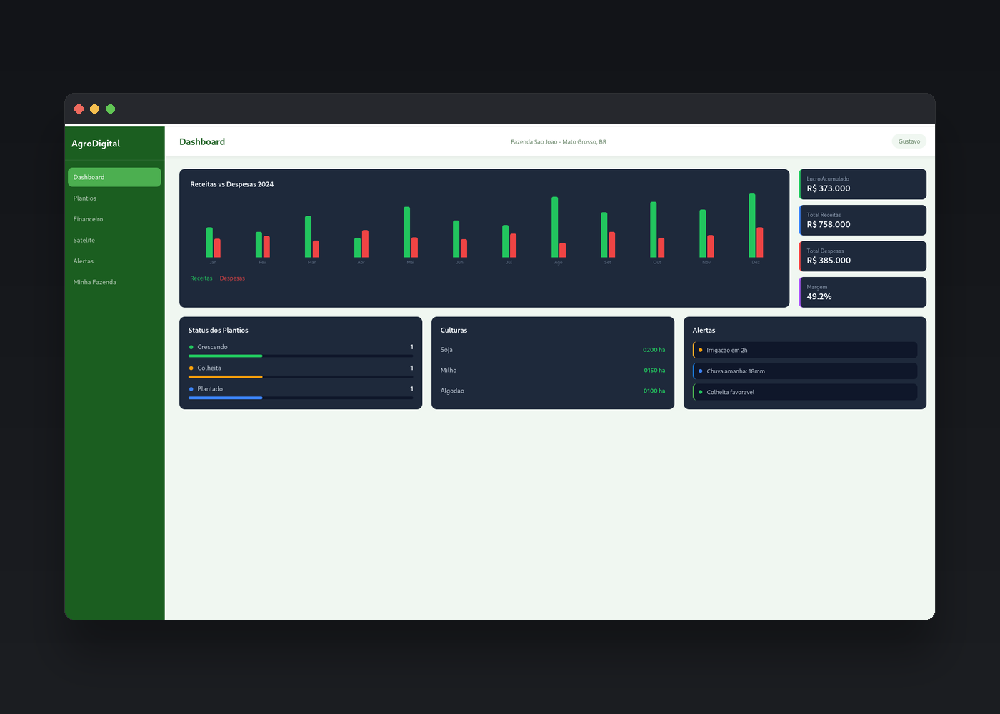
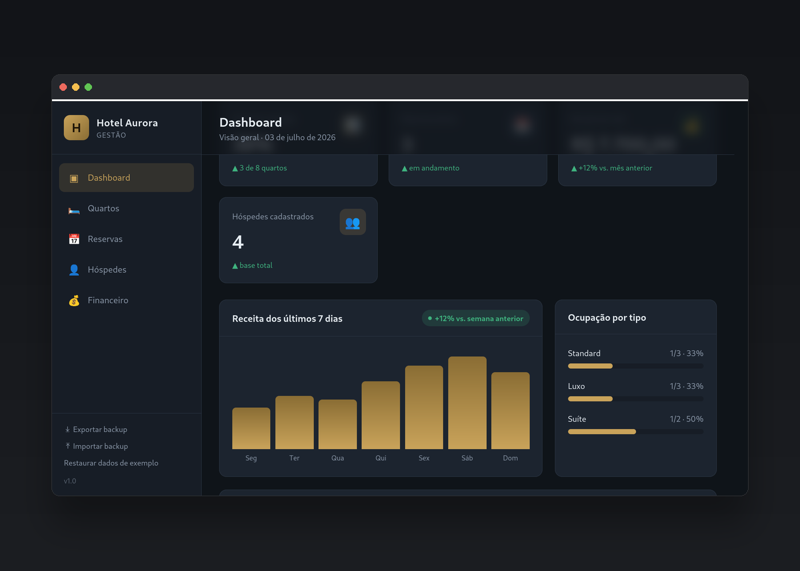

Design estratégico
Estruturas visuais claras, alinhadas ao público e à mensagem da marca.
Desenvolvedor & Designer de Experiência
Crio websites modernos, estratégicos e com alto impacto visual para empresas que querem crescer com presença online forte.
Portfólio
Estruturas visuais claras, alinhadas ao público e à mensagem da marca.
Interfaces intuitivas que guiam o visitante até a ação desejada.
Sites otimizados para carregamento rápido, SEO e boa navegação em qualquer tela.
Projetos

Sistema de gestão agrícola com dashboard financeiro, controle de plantio e monitoramento via satélite.

Painel de gestão para hotelaria com controle de quartos e reservas.